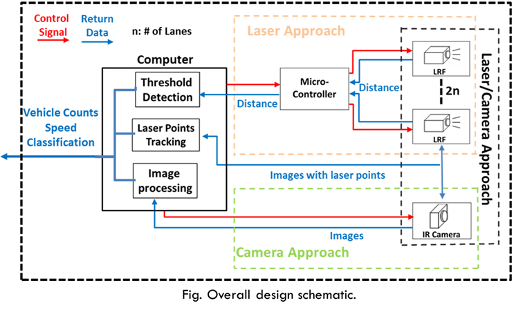
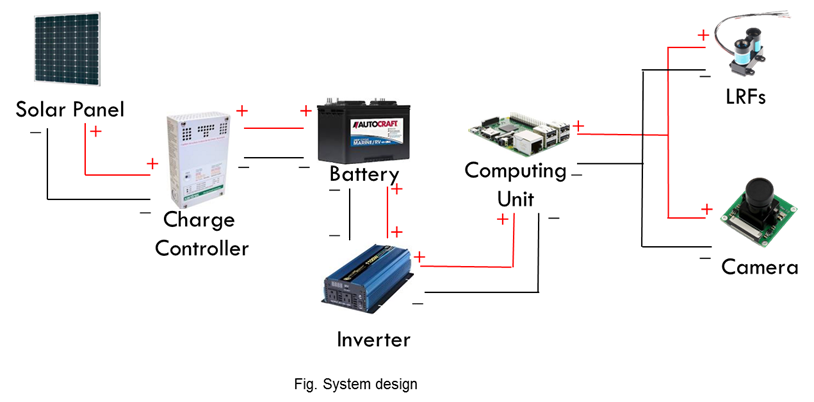
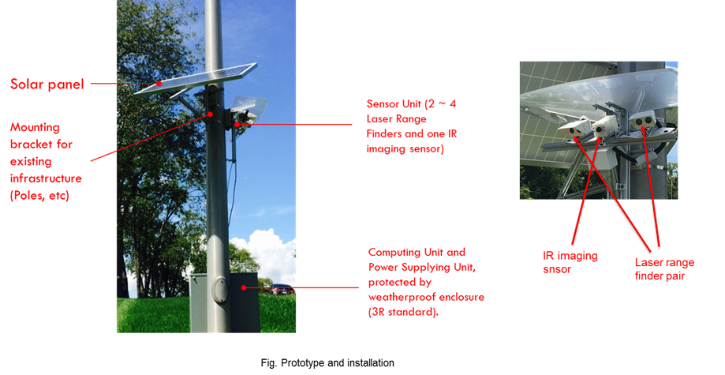
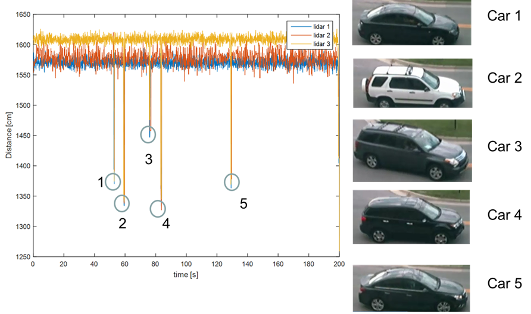

Abstract
This project presents a novel design of infrastructural traffic monitoring that performs vehicle counts, speed estimation, and vehicles classification by deploying three different approaches using two types of sensor, infrared (IR) cameras and laser range finders (LRFs). The first approach identifies passing vehicles by using LRFs and measuring the time-of-flight to the ground, which changes when vehicles pass. In the second approach, LRFs are used only to project a dotted line onto ground, and an IR camera identifies passing vehicles by recognizing the change of location of these laser dots in its images. The third approach utilizes an IR camera only and recognizes passing vehicles in each frame using background subtraction and edge detection algorithms. The design achieves high reliability because each approach has different strengths. A prototype system has been built and the field tests at a public road show promising results by achieving high reliability by having 95% accuracy in traffic counting and speed estimation.
Demo
-
 -
 -

-

Publication
Reliable Infrastructural Urban Traffic Monitoring Via Lidar and Camera Fusion
Yi Tian, Hangxin Liu, Tomonari Furukawa
SAE International Journal of Passenger Cars-Electronic and Electrical Systems, 2017
Design of Highly Reliable Infrastructural Traffic Monitoring Using Laser and Vision Sensors
Hangxin Liu, Yi Tian, Tomonari Furukawa
ASME International Design Engineering Technical Conferences and Computers and Information in Engineering Conference (ASME IDETC), 2016